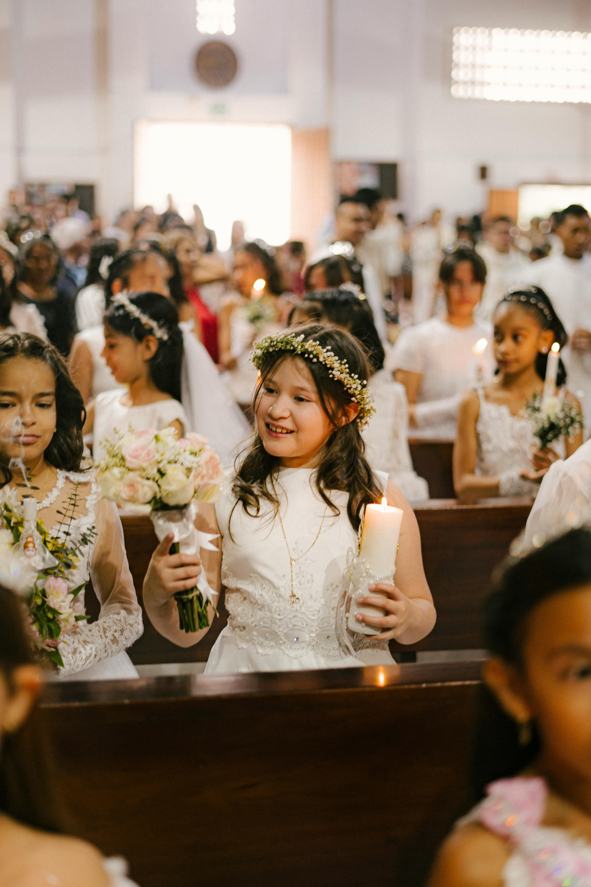

ST. JAMES
THE LESS
Roman Catholic Church
Our Religious Education Program
Our Religious Education Program is central to the parish life of Saint James The Less Church. We recognize the parents as primarily and principally responsible for the education of their children.
It is in this regard that we are committed to enhancing what you as parents have already provided by ensuring that your children receive the proper formation to receive the Sacraments in a timely manner.
Throughout the year, our program fosters an intentionally inclusive community of children, parents, and catechists, built on purposeful knowledge and Catholic values.
We strive to model God’s love and grace for our children grow in dignity, respect and compassion, that they learn to use faith and reason to explore lifelong questions of purpose, meaning, and love.
In addition, we encourage our children to know and develop a personal and intimate relationship with Jesus Christ, along with a commitment of love and service to His Church. It is our belief that a special personal bond with Jesus is essential to a lifelong process toward maturity in our Catholic faith as a lived reality.
Our program consists of weekly in-person classes for Grades 1-7 on Wednesdays and a modified schedule oon Mondays for Grade 8. The program includes Sacrament preparation for Reconciliation, First communion and Confirmation.
Our exceptional volunteer catechists are dedicated to their faith, to our parish families, and especially to our children. They enthusiastically give of their time and talents to help with the spiritual formation of your child.
With a value-based approach to learning, they set formative foundations for our children to help them apply faith and reason to their daily lives.
Please contact us for more information. We look forward to hearing from you!
Linda Rondinelli
Director of Religious Education
Call us at 732-521-0100 or 732-521-1188; email us at sjtlccd@gmail.com.
Our office hours are:
- Mondays from 9 am to 2 pm
- Tuesday through Thursdays from 8 am to 2 pm
- or by appointment